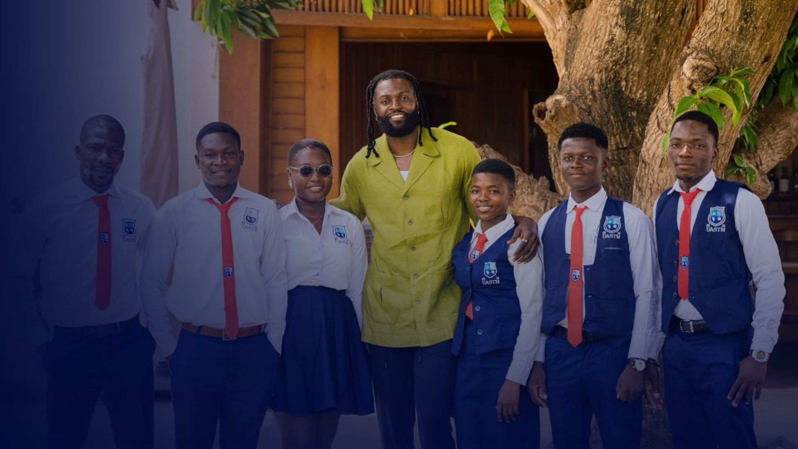

01 / PRENDRE SOIN
Santé & bien-être
Faciliter les soins primaires, une alimentation nutritive et la prévention des maladies pour les jeunes vulnérables.
SEA Foundation agit pour une jeunesse togolaise en bonne santé, qui entreprend et participe activement au développement du Togo. Votre talent a sa place. Votre engagement peut faire la différence.
La Fondation Sheyi Emmanuel Adebayor promeut l’éducation, la santé et l’entrepreneuriat des jeunes au Togo. Le plan s’appuie sur l’engagement de son président et porte la vision d’une jeunesse en bonne santé, entreprenante et actrice du développement.
Découvrir notre vision ↗Au Togo, chômage, sous-emploi, difficultés d’accès aux soins, addictions et discriminations fragilisent les jeunes, en ville comme en milieu rural. La réponse de la Fondation : rapprocher les opportunités en reliant santé, éducation, sport et insertion économique avec les communautés et les dispositifs nationaux.
Chiffres tels qu’ils figurent dans le plan stratégique ; ils correspondent aux années et sources indiquées dans le document, et ne sont pas présentés comme des données actuelles.
Le plan retient trois secteurs prioritaires. Les cinq cartes ci-dessous distinguent ces axes et certains domaines d’intervention décrits dans le document.
Faciliter les soins primaires, une alimentation nutritive et la prévention des maladies pour les jeunes vulnérables.
Soutenir les bourses et les enseignants, encourager le sport scolaire et préparer les jeunes à l’emploi.
Incuber les projets, former à la mobilisation de fonds et soutenir l’insertion socioprofessionnelle.
Former des agripreneurs et les accompagner dans différents maillons de la chaîne agricole.
Promouvoir l’équité de genre, l’inclusion du handicap et le libre accès aux rapports annuels.
Les dernières nouvelles et initiatives de SEA Foundation.

4 mai 2026
DécouvrirLes trois axes du plan 2024–2028 détaillent comment les priorités deviennent des programmes, des accompagnements et des opportunités concrètes.
Améliorer le bien-être physique et mental des jeunes de 15 à 35 ans, en particulier ceux qui sont vulnérables ou éloignés des services.
Le plan inscrit ces interventions en lien avec les stratégies nationales de santé et de nutrition.
Mettre l’éducation et le sport au service de l’autonomie, de la santé et de l’insertion professionnelle des jeunes.
Le plan relie ces interventions aux objectifs d’éducation de qualité (ODD 4) et de consolidation de la paix (ODD 16).
Faire de l’entrepreneuriat un levier d’intégration économique et sociale, et soutenir la création d’emplois décents.
Le plan relie cet axe à l’ODD 8 (emploi décent) et à l’ODD 1 (réduction de la pauvreté), et souligne l’équité de genre, l’inclusion du handicap et les effets positifs pour l’environnement.
À l’horizon 2028, la Fondation veut contribuer à améliorer les conditions de vie des jeunes grâce à des approches innovantes en santé, éducation et entrepreneuriat. Le plan entend aussi soutenir les objectifs de développement du Togo en matière de santé, d’éducation et de création d’emplois.
La confiance se construit sur le terrain : avec les acteurs locaux, à l’écoute des jeunes et dans la durée.
Associer les 15–35 ans comme acteurs du changement et leur donner une place dans les décisions qui les concernent.
Agir auprès des individus et des communautés, notamment par la communication et la lutte contre les normes sociales préjudiciables.
.jpg)
Accorder une attention fondamentale à l’égalité de genre et à l’inclusion des jeunes en situation de handicap.
Utiliser les données pour le plaidoyer, sensibiliser et contribuer à la conception des politiques et des programmes.
Identifier dans les plans annuels les risques qui peuvent freiner les activités et prévoir des mesures d’atténuation.
Partager les rapports annuels, consulter les bénéficiaires et utiliser les évaluations pour ajuster les actions.
Le document ne contient pas de témoignages de bénéficiaires. Ces cinq cartes reprennent donc des extraits et des engagements du plan, sans les attribuer à des personnes qui n’y sont pas citées.
« Les jeunes togolais en bonne santé, qui entreprennent et qui participent au développement. »
« Nous sommes convaincus que l’éducation est la clé de l’autonomie. »
« L’agriculture est un secteur clé pour la sécurité alimentaire et le développement économique. »
« La Fondation SEA fait de la redevabilité un principe consacré. »
« Ensemble, nous pouvons bâtir un avenir meilleur pour la jeunesse togolaise. »
Les logos proviennent des ressources du site. Leur présence ici n’affirme pas l’existence d’un partenariat en cours avec SEA Foundation.
Les réponses ci-dessous résument les informations indiquées dans le plan stratégique 2024–2028.
Le plan stratégique de SEA Foundation couvre cinq ans, de 2024 à 2028. Le document prévoit son évaluation au terme de la troisième année puis à la fin du cycle.
Le document retient trois secteurs prioritaires : la santé et le bien-être, l’éducation et le sport, et l’entrepreneuriat. L’agrobusiness est notamment développé dans l’axe consacré à l’entrepreneuriat des jeunes.
Le plan se concentre principalement sur les jeunes, avec une attention aux 15–35 ans et aux jeunes vulnérables. Il cite notamment les jeunes filles, les jeunes issus de milieux défavorisés et les jeunes en situation de handicap.
Le plan prévoit notamment un appui en fournitures scolaires, des programmes de bourses, le renforcement des capacités des éducateurs, des matériels didactiques et des infrastructures modernes. Il vise aussi le sport en milieu scolaire et universitaire, les compétitions, les infrastructures sportives, les soft skills et les outils informatiques.
Le document prévoit des plans de travail annuels, un suivi semestriel, des examens annuels avec les pouvoirs publics, la consultation des bénéficiaires et des rapports annuels en accès libre. Deux évaluations du plan sont prévues : au bout de la troisième année et à la fin du cycle.
Non. Le texte fourni ne contient pas de témoignages de bénéficiaires ni de logos de partenaires confirmés. Les citations affichées sont attribuées au plan ou au mot du président, et le carrousel présente uniquement des catégories de partenaires citées dans le document.
Le plan de SEA Foundation compte sur le soutien, l’expertise et l’engagement de ses partenaires et des parties prenantes.